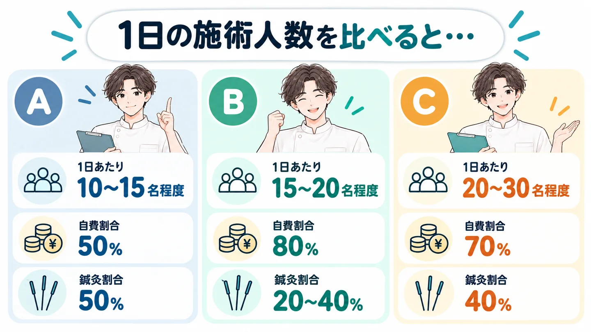
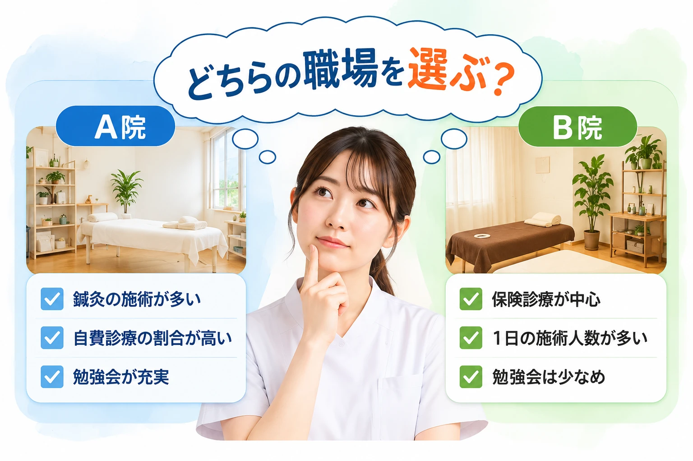
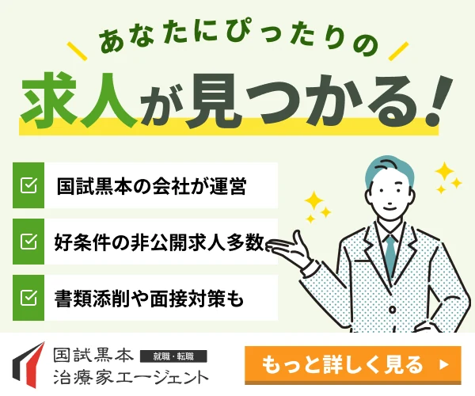
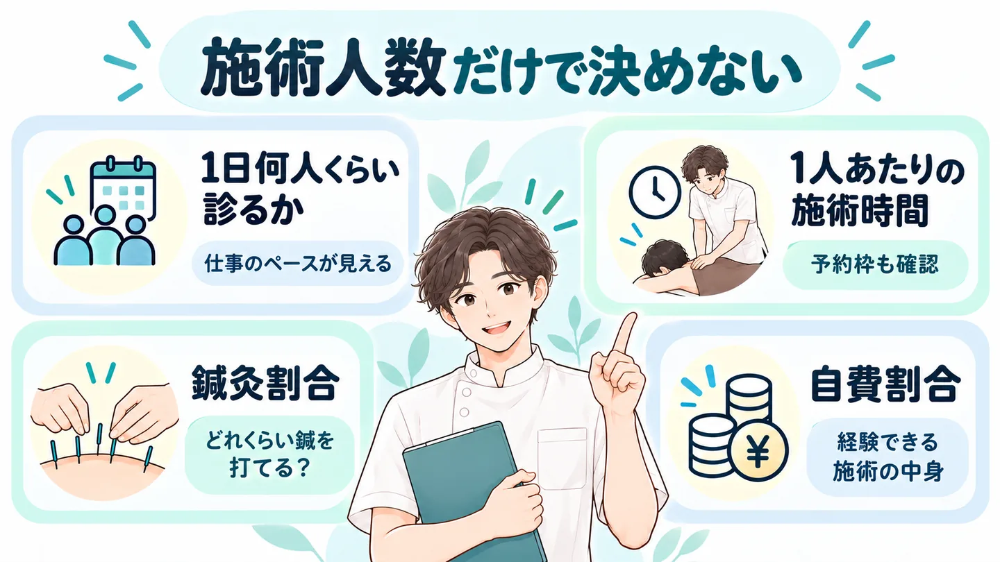

入ってから、
「え、1日こんなに診るの？」は遅い。
次の転職では、
1日何人くらい診る職場か
まで見ておきたい。
施術人数を見ると、毎日の仕事のペースが見えてくる。
求人票の雰囲気だけでは、1日の忙しさは分かりません。
“何人診るか”と“何をするか”をセットで見るのがポイントです。
- 1日何人くらい診る？
- 1人あたりの施術時間は？
- 鍼灸割合は？
- 自費割合は？
① 1日何人くらい診る？
まず見るのは、1スタッフの施術人数。
10〜15名程度と20〜30名程度では、1日の動き方はかなり変わります。
1日何人診るか、入る前に知りたい…
② 1人あたりの施術時間は？
人数だけでは判断しきれません。
施術時間や予約枠も合わせて見ると、自分が求めるペースに近いか分かりやすくなります。
③ 鍼灸割合は？
同じ人数でも、担当する施術の中身は違います。
もっと鍼を打ちたいなら、施術人数と鍼灸割合を一緒に見る。
④ 自費割合は？
自費診療の割合も、仕事の中身を知るヒント。
人数の多い少ないだけでなく、どんな施術を経験できるかまで確認する。
自分が続けやすい仕事のペースまで条件として伝える。
では実際に、
求人ごとにどれくらい違うのか？
10〜15名の求人も、20〜30名の求人もあります。
編集部が注目した治療家向け求人サービスを見てみると…？
実際の掲載求人には、1スタッフの施術人数まで具体的に記載されている求人がありました。
たとえば――

※掲載求人の一例です。
※募集状況・仕事内容・割合等は求人ごとに異なり、変更・募集終了となる場合があります。
同じ鍼灸師求人でも、1日の仕事のペースはかなり違う。
施術人数まで求人ごとに開いて、自分に合うペースか考えるのは正直大変…

※画像はイメージです。
「施術人数まで求人ごとに開いて、自分に合うペースか考えるのは正直大変…」
求人を1件ずつ開いて、
- 施術人数を確認
- 施術時間を確認
- 鍼灸割合を確認
- 自費割合を確認
- 気になる点を問い合わせ
転職活動をしながら全部やるのは、正直かなり手間がかかります。
しかも、公開されている求人ページだけでは分からないこともあります。
実は、こんな細かい条件まで見ながら探せるサービスがあります。
編集部が注目したのが、
＼国試黒本治療家エージェント／

おすすめポイント
- 治療家専門・お仕事紹介20年
- 求人票だけでは分からない職場情報まで相談できる
- 鍼灸割合・自費割合・施術人数など求人情報が細かい
- 好条件の非公開求人も紹介対象
- 書類添削・面接対策までサポート
- 利用料金
- ◎
- 完全無料
- 非公開求人
- ◎
- 好条件の
求人多数 - 職場の情報
- ◎
- リアルまで
把握 - サポート
- ◎
- 書類添削・
面接対策 - 実績
- ◎
- 治療家のお仕事紹介20年
- 運営
- ◎
- 東証プライム上場
株式会社エス・エム・エス
相談・利用は完全無料
＼希望条件から相談できる／
国試黒本治療家エージェント公式サイトを見る※国試黒本治療家エージェント公式サイト・公式バナーの記載をもとに、編集部がまとめています。
“何人診るか”と“何をするか”を一緒に見られる。
施術人数だけでなく、鍼灸割合や自費割合まで載っている求人があります。
だから、「人数はこれくらい」「でも鍼はもっと打ちたい」みたいな条件整理がしやすい。
登録すると、何がラクになる？
「1日何人くらいがいい」まで、希望として伝えられる。
- 1日何人くらいを希望するか
- 施術時間を重視するか
- 鍼灸をどれくらいやりたいか
こうした希望を担当者に伝えると、希望条件を踏まえて求人を提案してもらえます。
求人票だけでは分からない職場情報も確認しながら相談でき、書類添削・面接対策までサポートしてもらえます。
「国試黒本って、学生向けじゃないの？」
今働いている治療家の転職にも対応
国試黒本治療家エージェントは、学生の就活だけでなく、資格を取得して働いている治療家の転職にも対応しています。公式サイトでも「治療家の転職／学生の就活をサポート」と案内されています。
なぜ国試黒本治療家エージェントなのか？
① 治療家の求人・転職に特化
柔道整復師・鍼灸師・あん摩マッサージ指圧師など、治療家領域に特化した転職支援サービスです。
一般的な転職サイトではなく、治療家ならではの仕事内容・キャリアを前提に相談できます。
治療家向けのお仕事紹介は20年の実績があります。
② 求人票だけでは分からない情報も相談できる
公式では、専任担当者が求人票には載らない職場の情報も把握したうえで提案すると案内されています。
だから、
- 実際の施術内容
- 職場環境
- 勉強会
- キャリア
- 求人ごとの細かな条件
まで含めて相談しやすい。
公式サイトによると、過去1000人以上のカウンセリング実績を持つスタッフが希望条件をヒアリングしてくれます。
相談するときは、こう伝えるとスムーズ
- 1日何人くらいを希望するか
- 施術時間を重視するか
- 鍼灸をどれくらいやりたいか
③ そもそも求人情報の「粒度」が細かい
国試黒本の求人詳細には、
- 鍼灸割合
- 自費診療割合
- 1スタッフの施術人数
- 勉強会頻度・時間帯
- トレーナー業務
- 美容鍼
- 年間休日
などが掲載されている求人があります。
今回の「施術人数まで見て選ぶ」という探し方と相性がいい。
④ 非公開求人もある
公開求人だけではない。
公開求人以外の非公開求人が案内される場合もあります。
公開されている求人だけで探すより、選択肢が広がる可能性があります。
非公開求人とは？
求人サイトなどで一般に公開されず、転職エージェントを通じて紹介される求人のことです。国試黒本治療家エージェントの公式サイトでも「非公開求人からも厳選してご紹介」と案内されています。
⑤ 完全無料で相談できる
サービスの利用は無料。
「今すぐ絶対に転職する」と決め切っていなくても、次はどんな職場で働きたいのかという条件整理から相談できます。
キャリアカウンセリングから応募書類の添削、面接対策まで、入職までの転職活動をサポートしてもらえます。
こんな人におすすめ
- 入ってから「思ってたペースと違う」を避けたい
- 求人票だけでは分からない職場の実際を知りたい
- 応募書類や面接に不安がある
- 転職を決めきれていないが、条件は整理しておきたい
1つでも当てはまったら、まずは無料で相談してみるのがおすすめです
＼1日の施術ペースまで条件にして探す／
自分に合う施術ペースの求人があるか聞いてみる「鍼ができて、自分の時間も持てる職場」を希望した例
国試黒本治療家エージェントの公式サイトには、就職・転職体験談が掲載されています。
公式体験談｜鍼ができて、自分の時間も持てる職場へ
転職理由は、事務作業や雑務が増え、就業時間が長くなったこと。
希望条件は、
・鍼ができる
・自分の時間を持てる
・資格を活かせる
細かな希望条件まで相談し、転職先を探したという体験談が掲載されています。
※上記は国試黒本治療家エージェント公式サイト掲載の体験談を要約したものです。
※個人の体験であり、同様の結果を保証するものではありません。
▶自分も「何をしたいか」まで条件として伝える →└希望条件を無料で相談する
転職サービスだから、運営面も確認
国試黒本治療家エージェントの運営元は株式会社エス・エム・エス。
公式サイトでは、
- プライバシーマーク
- 東証プライム市場上場
- 厚生労働省「適正な有料職業紹介事業者」認定
などが案内されています。
転職では個人情報を預けるからこそ、サービス内容だけでなく運営体制も確認して選ぶ。
まとめ

転職先は「患者さんが多そう・少なそう」で決めない。
- 1日何人くらい診るか
- 1人あたりの施術時間
- 鍼灸割合
- 自費割合
そして、自分が続けやすい仕事のペースまで条件として伝える。
そこまで自分で調べるのが大変なら、治療家専門の転職サービスに相談する方法もあります。
＼入ってから「思ってた働き方と違う」を避けたい方へ／
自分に合う施術ペースの求人を探してもらう※求人状況・募集条件は時期・エリアによって異なります。
※希望条件に合う求人の紹介を保証するものではありません。